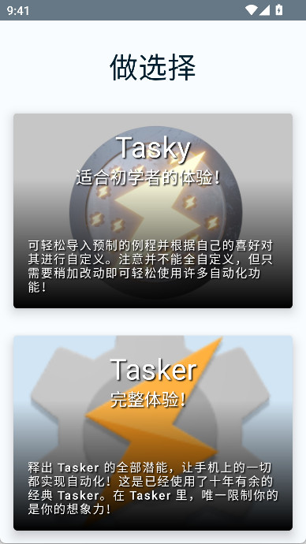
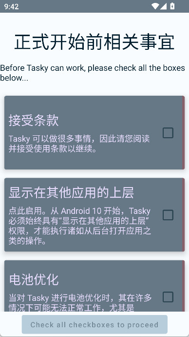

Tasker 上手记：用了三天，我把手机里一半的重复操作都删了
一直听说 Tasker 是安卓自动化之王，终于下决心装了。从申请权限到写第一个 Profile，踩了不少坑，但跑通的那一刻真的香。这篇讲点真实体验，不说空话。
为什么我会装它
说实话，我对"自动化工具"一直有点抵触——总觉得花两小时配置，省下来的操作时间还不够回本。直到上周我坐在车上，又一次手动切车载模式、开蓝牙、关 Wi-Fi、调屏幕常亮，一套动作下来，手机还卡了两秒。
这已经是我每天通勤重复三次的事情了。
Tasker 我早就听过，朋友说它是安卓上最强的自动化引擎，没有之一。后来我特意去官网扫了一眼简介，确实名不虚传。但每次搜教程，前五分钟都是"先申请 ADB 权限""再给无障碍权限""然后设置电池白名单"——光这些准备工作就把我劝退了。
这次我抱着"大不了删了"的心态从tasker下载拿了安装包装了它。

初印象：界面有点吓人，但逻辑清晰
打开之后第一反应是"这玩意儿怎么这么像开发者工具"。主界面按 Profile、Task、Scene 三个标签页组织，每个 Profile 下面挂着触发条件和执行任务，一眼看过去全是图标和英文术语。
不过静下心来读，逻辑其实很直白：Profile 是一条"如果……那么……"的规则，左边写"什么情况触发"（Context），右边写"触发了之后做什么"（Task）。Context 可以叠加，Task 可以链式调用，就这么简单。
难点不在逻辑，在权限。Tasker 几乎要把所有系统权限都要一遍——无障碍、通知访问、位置、电池优化白名单、自启动……我光在系统设置里跳来跳去就花了十分钟。它的权限检查页会把缺的权限一项项列出来，点一下直接跳系统设置，这个设计还行，但就是跑权限这件事本身挺劝退的。

第一个跑通的 Profile：夜间模式自动切换
我给自己设的第一个目标很简单：晚上十点自动调暗屏幕、开勿扰、关 Wi-Fi，早上七点自动恢复。
用时间上下文设的。Tasker 的时间上下文分两种形态——精确时刻和时间窗口。我要的是后者：22:00 到次日 07:00。设置跨午夜窗口的时候我还担心会不会识别错，结果它默认就是"开始时间晚于结束时间 = 到次日结束"，这点挺聪明，不用手动算。
Enter Task 里我加了三个动作：先关自动亮度、把手动亮度调到 15%、开勿扰。Exit Task 反过来，开自动亮度、关勿扰。
跑通的那一刻我盯着手机等了五分钟，22:00 整，屏幕真的暗下来了。
说实话那一刻有点小感动——我折腾了这么久，终于见到回头钱了。
踩的第一个坑：Profile 不触发
第二天早上醒来看手机，亮度没恢复。我愣了一下，Tasker 主界面右下角的开关是开着的，Profile 也在列表里，但就是没触发。
按照我之前看的排查思路，先确认 Tasker 在运行——通知栏有常驻图标，没问题。然后手动跑了一下 Task，亮度能调回去，说明 Action 本身没报错。
问题出在哪？后来翻了tasker文档才反应过来：我在时间窗口上叠了一个 Day Context，选了周一到周五。那天正好是周六。
就这么蠢。
排查这事儿 Tasker 有一套挺完整的清单，从确认运行状态、检查 Profile 是否禁用、逐个测试 Context、手动执行 Task 看报错，到看运行日志，一步步来总能找到问题。日志能看到每个 Action 的输入输出和变量值，说实话调试起来比很多 App 都方便。
车载模式：第二个真香时刻
解决了夜间模式，我开始折腾车载。朋友说 Tasker 配合蓝牙状态 Context 能自动切车载模式，我就照着搭了一个：
蓝牙连上我的车载设备 → Enter Task：开 Car Mode、屏幕常亮（连了车载充电器的话）、调大媒体音量；断开 → Exit Task：关 Car Mode、恢复音量、屏幕超时改回 30 秒。
Car Mode 这东西挺好用的，打开之后整个 UI 都变了——大图标、简化界面、屏蔽通知，开车的时候安全多了。而且它不像某些国产手机的车载模式是 ROM 自带的固定方案，Tasker 里你可以自己控制进入退出的时机。
不过要注意一点：Kill App 这种动作在无 Root 的普通权限下只能关后台空闲的 App，别指望它能杀前台应用。大多数场景其实也不需要，用 Go Home 把用户带回桌面就够了。
插件生态：深度用户的游乐场
Tasker 本身已经够强了，但 joaoapps 那套插件才是真正的杀招。我试用了一下 Join——它能让手机和平板组成一个 Mesh 网络，互相发指令。
我设了个"到家联动"：手机进家门的地理围栏，Join 发指令给平板，平板自动解锁、打开视频 App。听起来很爽，但 Join 是付费订阅模型，这点让我犹豫了——AutoNotification 和 AutoVoice 都是一次性买断，Join 却要按月收费。文档里说预算有限的话 AutoNotification + AutoLocation 两件套性价比最高，我暂时先没入订阅。
不想买插件也没关系，Tasker 原生的东西已经够用了。跨设备通信可以用 Pushbullet 免费替代，分享菜单也有 Event Context 能触发。
适合谁，不适合谁
三天用下来，我的结论很明确：
如果你是那种"这个操作重复三遍以上我就烦了"的人，而且不介意花一两个小时搞定初始配置——Tasker 值得装。它不是那种开箱即用的工具，但一旦跑通第一个 Profile，后面的扩展成本会越来越低。我现在已经在想要不要加个"低电量自动关 Wi-Fi + 降低亮度"的 Profile 了。
如果你只想找个一键切换深色模式的小工具——别来，这不是它该干的事儿。Tasker 的学习曲线确实有点陡，设置过程中的权限跳转、英文术语、Profile 不触发的排查，任何一个环节都有可能把小白吓跑。
还有，安卓 OEM 的额外限制一定要注意。小米、OPPO、华为这些系统对后台的管控比较严，自启动、后台锁定、省电模式这几项得手动过一遍，不然 Tasker 经常被杀。我用的是原生 Pixel，这些问题基本没遇到，但朋友的小米手机上确实栽过跟头。
写在最后
Tasker 的官网其实挺朴素的，下载也是走常规渠道。真正让它在自动化圈封神的，是社区沉淀下来的那堆 Profile 分享——你能找到几乎任何场景的现成配置，导入改一改就能用。
我自己那两个 Profile 现在还在跑，每天晚上十点自动暗下来，早上七点亮回去。车载模式上下班自动切换，连我老婆都问我"你手机是不是变聪明了"。
还没到"离不开"的程度，但已经不想删了。想深入折腾的话，GitHub、Gitee、GitCode 上都能拿到全套参考资料，随用随取。